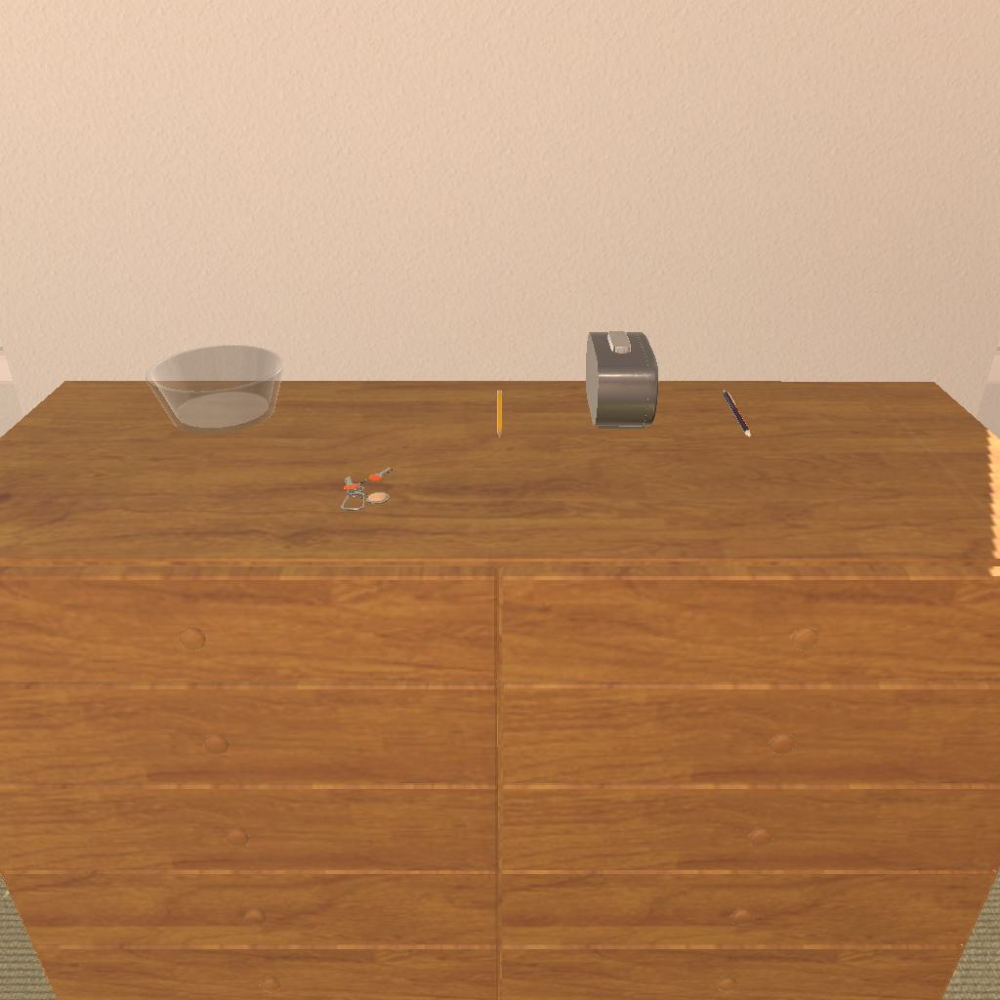

---------------------------------------------------------task: 0---------------------------------------------------------
--------------------------------------------------------------------------------------------------------------------------------------------------------------------
--------------------------------------------------------------------------------------------------------------------------------------------------------------------
Step:--------------------------------------------------------------------------9-------------------------------------------------------------------------------
----------------------------------------
VLM Prompt:
Image1:
Image2:
Image3:
**Instruction**
1. Analyze the provided images to identify all visible household objects and compare the difference between images (e.h. whether the object is opened or not and taken on hand or not), focusing on those relevant to the task description "look at alarmclock under the desklamp."
2. Use the analysis of images and the task hint "The agent must find an object of the desired type, locate and turn on a light source with the desired object in-hand." to answer the question: what is the most reasonable action in the choices for the task description "look at alarmclock under the desklamp"?
3. Decide and write the answer using the template: The answer is: (i): , where i is the real number. If there is no desired object in images, search every place based on **Initial Observation** to find the object. And if no one is exactly correct, choose a similar answer.
**Initial Observation**
You are in the middle of a room. Looking quickly around you, you can see bed (1), sidetable (1), drawer (1-11), dresser (1), safe (1), laundryhamper (1), garbagecan (1)
**Answer Choices**
(1): go to bed 1
(2): go to sidetable 1
(3): go to drawer 1
(4): go to dresser 1
(5): go to drawer 3
(6): go to drawer 4
(7): go to drawer 5
(8): go to drawer 6
(9): go to drawer 7
(10): go to drawer 8
(11): go to drawer 9
(12): go to drawer 10
(13): go to drawer 11
(14): go to safe 1
(15): go to laundryhamper 1
(16): go to garbagecan 1
(17): open drawer 2
(18): close drawer 2
(19): take bowl 1 from drawer 2
(20): take alarmclock 1 from drawer 2
(21): take keychain 1 from drawer 2
(22): take pen 1 from drawer 2
(23): take pencil 2 from drawer 2
**Answer**
Let's think step by step by following the instructions.
----------------------------------------
----------------------------------------
Original Response:
The task is to "look at alarmclock under the desklamp." Analyzing the images provided, we see a desklamp (which can be inferred from the shape of the object that looks like a lamp) lying on its side on the dresser (drawer 2). There is no alarm clock visible in any of the images on the dresser.
Given the task description and the hint that the agent must find an object of the desired type (alarm clock) and turn on a light source (desklamp) with the desired object in hand, the most reasonable action would be to first locate the alarm clock. Since the alarm clock is not visible in the images, we should search the places listed in the initial observation that could contain an alarm clock.
The sidetable, drawers, and dresser are the most likely places to find an alarm clock. Since the desklamp is on drawer 2 of the dresser, it is reasonable to start there.
The answer is: (17): open drawer 2.
----------------------------------------
----------------------------------------
>>> Refine Original VLM Response and Get Pure Action: open drawer 2
----------------------------------------
-----------------------------------------------------------------
Running time: 18.9771888256073 seconds
Total Money: 0.33251
-----------------------------------------------------------------
-----------------------------------------------------------------
Text Observation:You open the drawer 2. The drawer 2 is open. In it, you see a bowl 1, a alarmclock 1, a keychain 1, a pen 1, and a pencil 2.
-----------------------------------------------------------------
UNSUCCEED